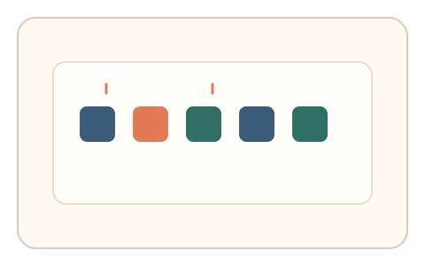
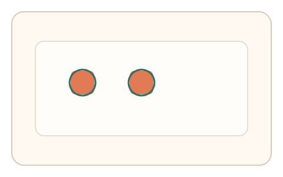
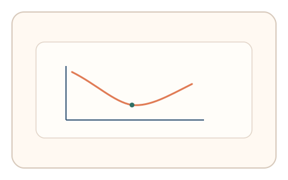

#41
视觉思考范式：时域/适应/残影
已扩展
注意力眨眼门
连续闪现序列中识别两个目标，利用注意力眨眼的漏检曲线作为时域信号。
概念原文
RSVP 连续闪现符号序列，要求用户选出两个目标（如“红色项”），记录第二目标在 200–500ms 间的典型漏检曲线。
以“注意力眨眼”时间曲线作为人类特征，而非识别准确率。
研究背景
注意力眨眼表明在快速序列中第二目标在 200-500ms 窗口内更易漏检，形成稳定的时间曲线。通过测量漏检分布与反应时序可形成可靠行为特征。
核心机制
- 快速序列呈现多个符号目标与干扰项。
- 用户识别两个目标并作答。
- 记录第二目标在不同时间间隔下的漏检率。
- 分析注意力眨眼时间曲线。
用户流程
- 步骤 1：用户观看快速符号序列。
- 步骤 2：用户选择或输入两个目标。
- 步骤 3：系统拟合漏检曲线并判定。
判定信号
第二目标漏检率曲线
注意力眨眼具有典型的时间窗口与形态。
反应时与目标间隔的关系
人类在眨眼窗口会出现延迟与犹豫。
判定逻辑
拟合第二目标漏检率随间隔变化的曲线，并结合反应时分布；曲线异常平坦或无窗口判异常。
对抗面
- 脚本逐帧读取序列直接作答
- 重放真实用户的答题序列
防御与缓解
- 随机化目标样式、颜色与出现位置
- 引入掩蔽与节奏抖动降低脚本识别
- 叠加微时序与鼠标轨迹信号进行多信号验证
可达性与风险
提供较慢序列或替代任务，避免对注意力受限用户不友好。
- 快速闪烁可能引起疲劳
- 显示设备刷新率影响序列时间控制
可视化状态

状态 1：快速序列
符号序列快速闪现。

状态 2：目标识别
用户选择两个目标。

状态 3：眨眼曲线
分析第二目标漏检曲线。
参考资料
Attentional blink
说明注意力眨眼现象与时间窗。
Visual attention
说明注意力限制对序列识别的影响。